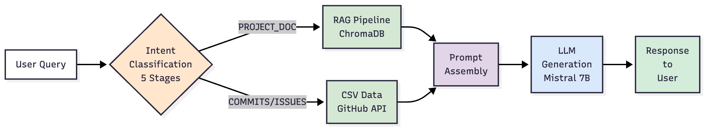
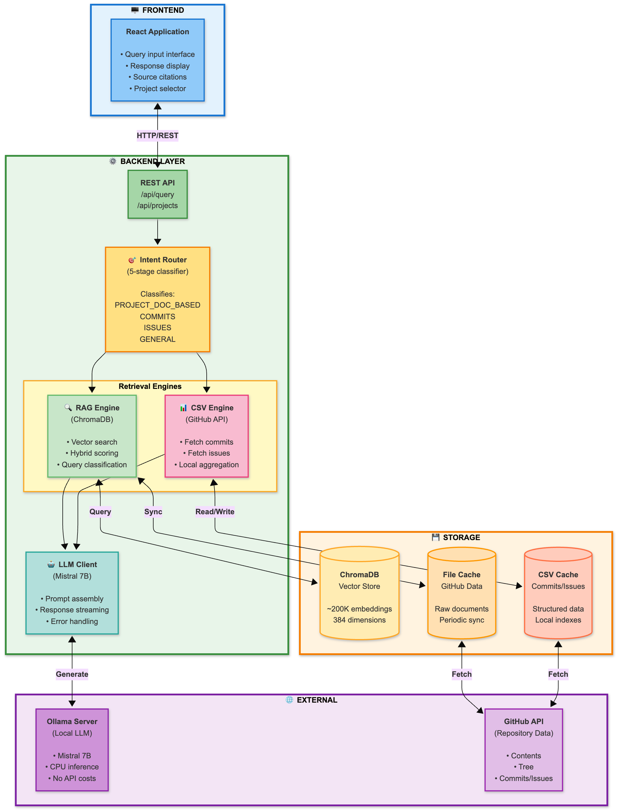

High-Level Overview

Figure 1: High-level system architecture showing major components
Detailed Architecture

Figure 2: Detailed architecture with RAG pipeline and data flow
Core Components
- User Interface (Frontend): React-based chat interface for natural language queries
- Intent Classification Module: Five-stage hierarchical pipeline achieving 86.4% accuracy in routing queries
- RAG Pipeline: Semantic search over project documentation using all-MiniLM-L6-v2 embeddings and ChromaDB
- CSV Data Pipeline: Structured retrieval of commit and issue metadata via GitHub API
- Prompt Assembly Engine: Merges retrieved context with anti-hallucination rules
- LLM Generation Module: Local Mistral 7B via Ollama for privacy-preserving reasoning
- Persistent Storage Layer: ChromaDB vector store, CSV cache, and file cache for reproducibility